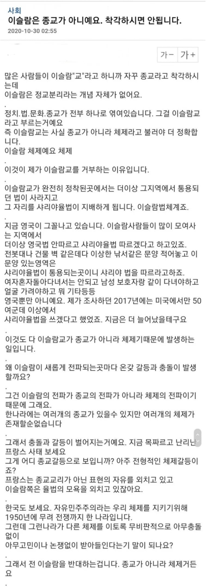

이게 맞다

이게 맞다
(샤리아로 참수 처형하면 아무튼 걔네들은 급진임 이라고 하면서 실제로 자정작용은 하나도 이루어지지 않는건 싹 조용히 닥치고있으며)
이슬람 근본주의를 제쳐놓고 무슬림만으로도 사상이나 생활 양식이나 현대 인권 사상하고 배치되는 부분이 많아서 조심에 또 조심해야 함.
니말대로 종교의 문제라기 보다는 정교분리가 안된 중세국가 사람들이 우르르 몰려가면서 생긴 문제라고 보긴함. 문제는 이슬람 이민자들 상당수가 그런 나라들에서 온다는거고, 비교적 세속화가 진행된 튀르키예 같은 곳도 여전히 종교가 강력하게 사회를 옥죄이고 있는 중이라서 현실적으로 ㅈ박은 이미지가 좋아질수가 없어.
ㅇㅈ 진짜 쉽지 않음. 결국 문명의 시차가 문제인거지. 에르도안 체제 아래서 흔들리는 튀르키예의 세속주의만 봐도 그 관성이 얼마나 질긴지 여실히 보여주고 있고. 다만 그런 한계와 리스크를 명확히 인지하고 있으니 더더욱 뜬구름 잡는 배척이 아니라, 유럽의 실패를 거울삼아 우리 법과 행정 시스템으로 철저히 통제하고 관리해야 한다는 거.
(이슬람국가에서도 이미 법으로는 종교적 사유로 참수처형은 허용되어있지 않지만 그걸 다 씹고 뭉치면 샤리아로 참수처형을 해대서 법으로 컨트롤 안되는 집단이라는걸 이악물고 무시하며)
일어나지 않은일? x
해외에서 일어난일 o
이미 일어난 일이고 사례가 있는데 우리나라에서 일어나지 않을까 하는 두려움이 첫번째임
해외에서 일어났지만 우리나라에서는 안일어날거야 라고 안심을 하기위해서는
1 그런일이 일어나도 우리나라가 컨트롤가능한 능력이 있어야됨
2 그런일이 일어나지 않도록 대다수라고하는 극단적이지 않은 무슬림들의 자정작용을 해야함
3 극단적인무슬림만 걸러서 못들어오게 하면됨
근데 1은 알 수 없고
2는 안하고
3은 불가능하잖아
스스로 노력하지 않는데
왜 우리가 위험을 감수하고 노력해야하지?
해외에 일어났으니까 우리도 조심해야한다가 합리적이지
해외에서 일어났지만 우린 상관없어 괜찮아가 합리적임?
질문을 번호까지 매겨가며 정리해 줘서 고마움. 하나하나씩 의견을 개진하자면 다음과 같음.
결론부터 말하면 나는 "해외에서 일어났지만 우린 상관없어 괜찮아" 라는 나이브한 소리를 한 적이 없음. "해외에서 일어난 실패를 철저히 복기해서 우리 시스템으로 통제하자"는 쪽.
Q. 우리나라가 컨트롤 가능한 능력이 있는가?
A. '알 수 없는 것' 이 아니라 이미 20년 넘게 증명하고 있음. 유럽은 식민지 청산 & 난민조약 때문에 비자 통제 자체가 불가능한 상태에서 수백만을 밀어 넣었지만, 한국은 난민 인정률도 존나 낮고 지문날인제도, 고용허가제(E-9) 쿼터, 사업장 이동제한 등 국가 행정망으로 추적관리함. 실제로 국내 20만 무슬림 체류자 중 집단 폭동이나 테러 조직화가 한 번이라도 터진 적이 있음? 법 어기면 즉각 강제출국 때리는 강력한 행정 통제력이 이미 작동 중임.
Q. 온건 무슬림들의 자정작용(자성)이 없는가?
A. "안 한다"고 단정하는 건 현실을 몰라서 하는 소리임. 실제로 대다수 세속 무슬림들은 극단주의(와하비즘/살라피즘)를 '이슬람의 이름을 더럽히는 이단' 으로 규정하고 치열하게 배척함. IS와 탈레반에 맞서 가장 최전선에서 피를 흘려가며 싸운 이들도 쿠르드족과 이라크/시리아의 무슬림들이었고, 국내에서도 한국이슬람교중앙회(KMF) 같은 공인 단체들이 근본주의 설교자를 사전에 쳐내고 한국 법 준수를 교단 차원에서 의무화하며 자정작용을 하고 있음. 수틀리면 국정원에 신고해버리는데, 주류 무슬림들이 극단주의를 방치한다는 건 명백한 사실 왜곡임. 시설관리직 같은거라서 안하면 개욕쳐먹고, 해도 안한다고 욕쳐먹는 게 현실임.
Q. 극단주의자만 걸러서 못 들어오게 하는 게 불가능한가?
A. 종교 사상 자체를 독심술로 거를 순 없지만, 비자 스크리닝(범죄경력조회, 신원보증, 입국 목적 심사)과 인터폴 공조를 통해 고위험군을 입국 단계부터 원천 차단하는 게 현대 출입국 관리국의 기본 기능임. E-9 비자를 발급받는 것 자체가 그런 과정을 거쳐서 들어오는거고.
'위험을 감수하고 자선사업 하자' 는 골빠진 소리가 아님. 이미 지방 제조업과 농어촌이 무너지지 않으려고 외국인 인력을 합법적으로 데려와 쓰는 냉혹한 현실에서, 덮어놓고 '미래의 위험' 을 핑계로 헌법과 법치를 부정하지 말고, 촘촘한 행정 관리와 자정작용 유도로 리스크를 통제하자는 게 내 일관된 논지임.
그럼 대안이 있음? 정교분리가 일어나지 않은 이슬람 국가들만 입국금지시킬까?
정교분리 일어난 곳들, 세속주의인 곳들도 개판임
당장 얼마전에 기장이 부기장 공격하고 비행기 테러하려했던 케이스가 오만인임
오만은 이슬람 국가들 중에서도 가장 온건한 곳 중 하나인데
그런 곳조차 저ㅈㄹ하는 애들 나오는거
윗댓글 참조해줘
그걸 거를수있는 방법이 없으니 제한하는게 맞지
그게 싫으면 오지마라고 이게 어려움?
너네를 받아주는 곳으로 가던지 너네끼리 뭉쳐살아라
너네 그 ㅈ미개한 습성을 자정작용해서 없애지 않으면 환영받을 수 없다.
이건 이슬람이아니라 어느 집단이든 마찬가지이잖아
이게 어렵나??
뭐, 나도 다수의 이슬람들은 우리와 다를바 없다고 생각함.
하지만 소수의 이슬람들은 너무나도 래디컬함.
그리고 이슬람들이 늘어나면 그 소위 소수의 이슬람들에 의해 이슬람 사회가 휘둘릴 수 밖에 없음.
2차 대전때 일본의 다수의 시민들은 우리와 다를바 없지.
그런데 그 사람들이 군부가 광기에 빠졌을때 뭘 했음?
그 군부를 반대한게 아니라 오히려 군부의 손과 발이 되어 학살과 파괴의 선봉장이 되었음.
지금 레디컬한 이슬람들이 유입됐을때 그들을 자정할 수 있는 시스템이 이슬람 사회 내부에 있음?
난 아니라고 봄.
무슨 합리와 인지를 얘기하고 종교의 자유를 논하기에 앞서 이슬람이 지금까지 세계에 보여준 모습으로 이미 충분히 예상 가능하다고 봄.
온건한 다수가 급진적인 소수에게 휘둘릴 수 있다는 우려 자체에는 동의함. 틀린말이 아닌 게, 실제로 역사에서 '침묵하는 다수' 의 형태로 수없이 나타났던 현상이니까.
그런데 WW2 일본을 예로 들었으니 오히려 그 역사를 구조적으로 살펴봐야 하지 않겠음? 일본이 군국주의로 치달은 건 단순히 군부가 폭주했기 때문이 아니라, 군부의 정치권력 장악과 천황제 이데올로기, 언론통제, 치안유지법을 통한 반전세력 탄압 등이 복합적으로 작용했기 때문이자너. 그래서 반전운동 벌이다가 옥살이하면서 고초를 겪은 일본인들도 제법 있었고.
그리고 이슬람 내부의 자정작용이 없다는 것도 사실과 다름. 2014년 다에쉬 준동당시 이맘 120명 이상이 수괴 알바그다디에게 공개서한을 보내 종교적 근거로 극단주의를 비판했고, 인도네시아의 나흐다툴 울라마 같은 거대 종교단체는 비무슬림의 동등한 시민권과 세속적 헌정질서를 옹호해 왔음.
물론 이런 운동이 충분한 성과를 거뒀는지는 별도로 검증해봐야 할 사안이지만, 하지만 존재하지 않는다고 단정할 수 없다고 생각함.
오히려 개붕이가 이야기한 급진적 소수의 공동체 장악을 예방하려면, 어떤 조건에서 그들이 영향력을 확대하는지 분석하고 이를 견제할 국가제도와 공동체 내부의 역량을 강화해야 하는 거 아닐까?
내가 처음부터 주장하는 건 무슬림들이 반드시 온건하게 남을 거라는 낙관론이 아님. 같은 말을 계속 반복하게되는데, 급진화의 가능성을 인정하기 때문에 오히려 그 인과관계를 제대로 분석하고 예방해야 한다는 거.
아무도 성공하지 못 한 분석과 예방을 할 바엔 막자는 애들도 일리는 있다는 건 인정하지?
니가 뭔가 설득하고 싶다면 사람들에게 제시해야 하는 건 '왜 해야하는가'이지, '그러니까 더 대비하고 분석하자'가 아냐
그럼 평행선이 되는거야
적어도 비판점이나 근거를 들어가며 쿼터를 조정해야한다까지는 당연히 들을 수 있지. 적어도 개슬람 바퀴벌레 다 척살해야한다같은 허공에 떠도는 빈말보단 훨씬 나음
다만 나는 현장에서 그 사람들의 노동현실과 공동체의 작동방식을 직접 들여다보고 분석하는 입장에서, 무조건 문을 걸어 잠그기보다는 아직 우리가 설계하고 통제할 수 있는 제도적 가능성에 조금 더 무게를 두련다.
지금 추세만 유지해도 난 별 일은 없다고 생각하는데
쿼터 조정까지 들을 수 있다니 니가 의견을 명확히 하면 되겠지. '난 무분별하게 유럽처럼 난민 받자는 것이 아니다' 같은
전적으로 동의한다.
이런 애들을 보고 책만 보고 이론만 배워서 실전에선 먹히지 않는 소리하는 애들임.
아 당연히 너가 하는 말은 이론적으론 맞는 말이지.
근데 니 미래 무슬림 이웃은 너가 이렇게 이론적으로 말하려 할때, 난 잘 모르겠고 일단 니 모가지 썰고 생각해봄 할텐데, 니 모가지 떨어지고 상대를 이론적으로 설득하려 잘 노력해보렴.
마치 이상적인 공산주의는 아직 오지 않았다. 이런 얘기 씨부리는 애들이랑 똑같은 듯.
뭐랄까 존나 꽃밭에서 살고 있는 인생인가봄 다른 의미로 부럽네 ㅋㅋ;;
100% 맞음
그래서 이슬람은 탄압해야 하는거고
이슬람이 종교의 자유를 논할꺼면
이슬람 국가들이 국민 개개인의 배교를 허용하고 말해야지.
아직도 코란에 묶여서 참수형이나 해대는 미개한 새끼들이 만든 미개한 정치체제임 저건 받아들이면 안됨
이슬람 맘들도 대놓고 쉴드는 못치고
(타국가에서는 그랬어도)우리나라에 들어오면 다를 것이다
ㅇㅈㄹ하네 ㅋㅋㅋㅋ
이슬람맘들 십여명명정도있음
이슬람 쉴드 댓글들 따봉 10몇개정도 눌림
이전 이슬람 글들도 보면 10~15명정도 따봉 빠르게 눌리고
그담엔 따봉 더 안눌림
상주하며 이슬람에 호의적인 글 쓰고 서로 따봉눌러주나봄
걔네 사실은 북한맘들임 진짜임 팔맘 = 북한맘 = 이슬람맘 같은 애들임ㅇㅇ
가끔 댓글 곱창나있는데
조용히 따봉만 눌리는거 보면 기묘함..
종교의 자유 폐지후 개슬람 개독 탄압 ㄱㄱ
사막잡신 다 묶어서 탄압때려
그냥 피곤한데 종교 싹 다 탄압하죠
생각해보니 이미 소련에서 했구나
체제이야~
이슬람교 믿으면서 제대로 굴러가는 나라가 1개도 없음?
이슬람은 시대의 부름이고 민중의 갈망이야
이슬람을 받아서 씹창이 안난 나라가 한나라라도 있나?
내가 진짜 몰라서 그럼
이슬람 난민들을 받았는데 그 나라의 문화와 화합되고 자연스럽게 녹아가 서로 존중하고 배워가는 비이슬람 문명권의 나라가 단 한 나라라도 존재함? 진짜 딱 한 나라라도??
감사하게도 타국들이 자국의 존망을 걸고 실험해준 덕분에 전 세계 국가들이 이슬람을 받았을때 국가적으로 어떤 문제가 터져나오고 시궁창이 되는지 이제 모두가 아는 시대에 이슬람을 받아야한다?
누굴위해서?
그냥 이래저래 모여서 자기 나라 하나 세우는거네 ㅋㅋ
씹슬람 이새끼들 배교하면 사형이나 사회적 말살 수준의 린치하는 놈들이 종교의 자유 ㅇㅈㄹ
ㅋㅋㅋㅋㅋㅋㅋ
그래 유럽이 똑똑해서 너랑 똑같은 소리하고 이꼴 났나보다?
참 똑똑하네